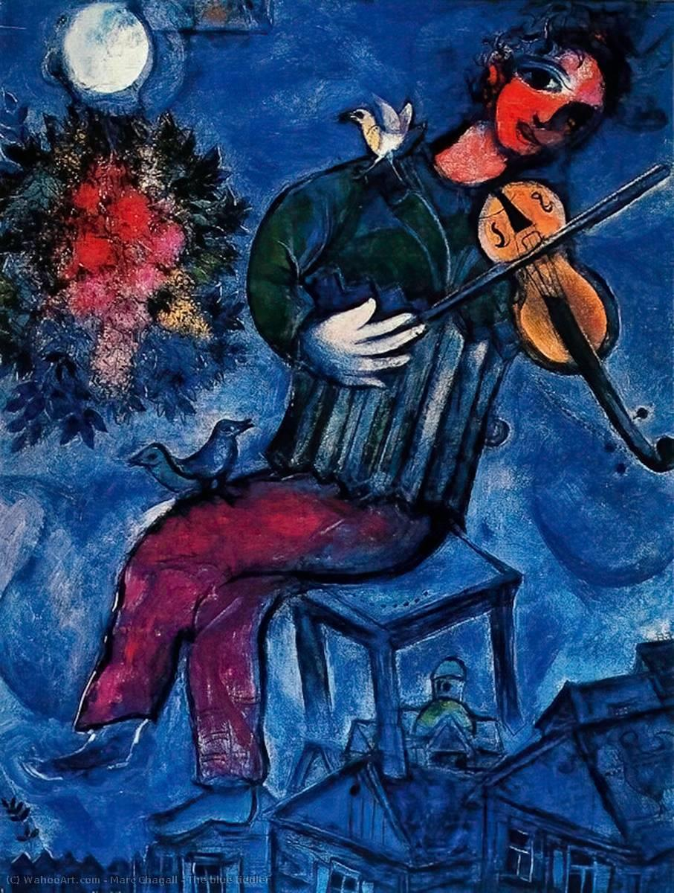

Juifs sépharades – George Rodger
Algérie (1957) et Tunisie (1958) – Histoires d’Afrique du Nord
Une clé de lecture pour les simples
Menahem R Macina
« L’explication de Tes paroles illumine et donne aux simples de comprendre » – Psaume (119, 130).
Vouloir saisir la compréhension juive de l’Écriture d’après les subtiles manipulations techniques de citations scripturaires effectuées par des rabbins soucieux avant tout de fixer, pour les fidèles, les lois et les coutumes religieuses, ou d’après les variations exégétiques, des plus savantes aux plus populaires, sur des thèmes agadiques, équivaudrait à prétendre rendre un compte exact de la religion chrétienne en étudiant les homélies et les commentaires scripturaires des Pères de l’Église, ou les apophtegmes (ou aphorismes) des Pères du désert. Certes, la Mishnah, le Talmud, le Midrash et leurs commentaires traditionnels doivent être étudiés soigneusement par les spécialistes, avec toutes les ressources d’une herméneutique doublée d’une longue pratique de la casuistique rabbinique. Mais se limiter à cela, ou pis, faire de ce travail de classification, d’analyse littéraire et d’exégèse un but en soi serait non seulement vain et inefficace, mais risquerait, au terme d’un labeur gigantesque, de n’apporter que dispersion, incertitude et confusion. De même qu’on ne saurait saisir l’essence d’un phénomène en le décomposant en ses éléments, ni même en faisant la nomenclature et l’étiologie des événements qui les affectent, mais qu’il importe de garder fidèlement la dimension dialectique d’une recherche qui doit sans cesse lutter contre le morcellement du multiple et s’efforcer de saisir l’unité qui le sous-tend, ainsi convient-il de rechercher résolument l’esprit qui préside aux étranges comportements de ces myriades de mini-exégèses, dont foisonne une littérature juive à allure de forêt vierge. Faute de pouvoir cerner avec certitude le “sens”, la “position” de toutes ces particules intellectuelles, dont l’agitation moléculaire hallucinante nous est totalement incompréhensible, force nous est d’en contempler, avec émerveillement, les formes, les figures et les signes qu’elles dessinent, dans leurs mouvements d’ensemble qui paraissent obéir à des lois mystérieuses. Car ce n’est qu’à notre rassurant niveau macroscopique que l’image en est lisible, à défaut d’être compréhensible… Et plaise à Dieu que nous ne renouvelions pas l’erreur grossière du scientiste rationaliste que fut Auguste Comte, dont la simpliste “loi des trois états” de l’humanité fait bien sourire aujourd’hui! À l’instar de l’Iliade et de l’Odyssée, la Bible n’appartient pas à l’âge de pierre de l’intelligence. Malgré les formes mythiques, qui se révèlent à notre lecture humaine, de ce vaste fleuve énigmatique de mots, comme surgi d’un mystérieux jaillissement primordial, malgré « l’Arbre de la connaissance du bien et du mal » (1), les « Séraphins de feu » (2), ou les « collines qui bondissent comme des béliers » (3), l’Écriture sainte n’est pas une lecture pour hommes de Cro-Magnon, ni une vilaine version confessionnelle des Mille et une Nuits ou des Contes d’Andersen, pas même une saga chauvine ou fétichiste… Soyons plutôt reconnaissants à Dieu de s’être adapté à notre monde lilliputien, d’avoir volontairement oublié les “bottes de sept lieues” herméneutiques avec lesquelles Il arpente l’Histoire, pour que le “Petit Poucet” croyant, perdu dans la forêt des interprétations, en rattrape miraculeusement le sens, par delà les milliards d’années- lumière séparant de la nôtre la nature divine ineffable de cet Époux divin de l’homme, qui fait semblant de « fuir comme un faon, sur les montagnes embaumées » (4), pour que nous ayons la nostalgie de Sa présence adorable…
Ne jouons pas les élèves trop pressés de connaître, sans en avoir même abordé les prolégomènes, la formule de la théorie de la relativité, et qui presseraient insolemment le savant de la leur révéler. Ne mériteraient- ils pas, ces vilains petits drôles, de se voir pris au mot et de lire au tableau noir la sibylline réponse tant convoitée, mais pour eux ironiquement inutile: E = mc2?… Nous, de même, malheureux ignorants que nous sommes des « voies de Dieu, qui ne sont pas nos voies », comme de « ses pensées, qui ne sont pas nos pensées », que ferions-nous, à supposer qu’elle existât, de cette formule merveilleuse, puisque nous ne saurions même pas la déchiffrer?…
Et si certains d’entre nous ont succombé, en secret, à cette démesure, en sommant Dieu qu’Il se révèle, tel qu’en Lui-même – Lui, dont « on ne peut voir la Face sans mourir »!… –, qu’ils s’humilient bien vite! Qu’ils Lui soient reconnaissants d’avoir, par pure miséricorde, interposé entre Sa splendeur brûlante et notre insignifiance inflammable l’immense souffle azur de Sa Parole, qui « soutient toutes choses » (5) ! Sans cette “atmosphère” tutélaire, pourrions-nous supporter le « Soleil de Justice » (6) ? Oserions-nous seulement jeter vers Ses “formes” fulgurantes nos coups d’œil furtifs d’apprentis-sorciers de l’exégèse, abrités derrière les lunettes noires de notre science à demi aveugle?
Allons, courage! Le Livre est ouvert (7) : « Les Cieux racontent la Gloire de Dieu » (8). Certes, ce que nous percevons, ce que nous lisons, en caractères braille, ce qui nous est “signifié” là, ce n’est pas Lui. Ce n’est qu’une trace de Lui, un écho de Son essence et de Ses œuvres, qu’il nous faut interpréter, décoder, actualiser… Mais il n’y a pas lieu de nous attrister de l’infirmité congénitale de notre herméneutique, et encore moins de désespérer de jamais rien comprendre à ce langage. Il faut le croire fermement, Dieu a choisi, pour communiquer avec nous, le “code” le plus adéquat, celui-là même qu’Il a conçu pour que les petits d’homme apprennent à dialoguer, au lieu de s’entretuer: la Parole. « L’Écriture parle le langage des hommes », ont sagement averti les rabbins et, à leur suite, les Pères de l’Église… Et si nous ne saisissons pas immédiatement le “sens” de Ses mots, écoutons-en au moins le son, la “mélodie” qu’ils composent. Ressassons-les, essayons-nous à les prononcer, comme ces tout-petits qui ânonnent et bafouillent affreusement, aux premiers pas hésitants du langage articulé. Comme l’enfant, ayons confiance. Notre Père nous parle. Et même si nous ne “comprenons” pas ce qu’Il nous dit, nous “savons” que ce sont des mots d’amour… Le temps n’est pas loin où elles deviendront “signifiantes”, ces phrases encore incompréhensibles à notre « oreille incirconcise » (9). Jusqu’à maintenant, elles ne sont encore, pour beaucoup d’entre nous, que des agrégats de lettres, des éléments indistincts, impersonnels, énigmatiques, incohérents, obéissant à des lois statistiques ou au flux du hasard…
Dans un jadis qui a des dimensions d’éternité, ces photons intellectuels de l’onde omniprésente de la Parole préexistante ont été pris dans le champ d’une formidable tornade d’énergie spirituelle. On les a malaxés, croisés, combinés entre eux, des myriades et des myriades de fois. Leurs évolutions infinies et vertigineuses ont épuisé toutes les gammes du calcul des probabilités, épousé toutes les formes de géométries théoriques, dont les formulations mathématiques n’ont jamais été inventées, jusqu’à ce qu’ils fussent enfin agencés comme il fallait qu’ils s’agencent, écrivant éternellement une Histoire qui n’existait pas encore, et qui ne prendrait sens qu’infiniment plus tard, quand existeraient des hommes et des femmes capables de la lire…
Alors, la Création s’est accomplie et les événements sont advenus comme ils étaient écrits depuis toujours. Puis les êtres sont venus à l’existence, comme ils devaient être, tels que leur Créateur les avait « connus », aux siècles des siècles… Comme il s’en est donné du mal, le grand Livre de l’univers, pour attirer l’attention des petits d’homme, et pour qu’ils aient envie de le déchiffrer!…
Puis, Moïse est survenu, et un peuple est devenu: un peuple à qui son Dieu apprend à lire. Sur la pierre d’abord… Mais les pierres, ça se brise, surtout quand elles tombent de haut, des mains d’un prophète en colère. Préférer un veau – fût-il en or – aux théophanies divines, cela donne à réfléchir, même à un Dieu! Alors, sachant bien qu’il faudrait à Son peuple beaucoup de temps pour apprendre à lire, Il leur a écrit ce qu’Il avait à leur dire. Dans la tête d’abord, à coups d’invectives et d’objurgations de prophètes. Dans la peau, ensuite, à coups d’exils et de souffrances. Dans le cœur, enfin, à coup de remords d’amours infidèles… Et les Juifs ont appris à se souvenir. Alors, leur est venue l’idée d’écrire… Imaginez un peuple qui ne sait même pas lire son destin, et qui prétend mettre par écrit ce qui lui arrive!… Si cela a réussi, c’est que Dieu était de la partie. Pensez donc: Il n’attendait que cela depuis une éternité… Les Juifs ont conscience de leur destin exceptionnel, dans la gloire comme dans la déréliction, mais jamais, pour autant, ils n’auraient eu l’orgueil de croire qu’en écrivant leur histoire, ils scellaient le destin du monde entier. Comme la main parentale tient ferme celle de l’enfant, dans son ébauche des premiers signes d’écriture, l’Esprit de Dieu guidait la plume hésitante des scribes et des prophètes, qui scellaient, sans le savoir, le destin des nations, au travers des récits des malheurs qu’elles infligeaient à leur peuple.
C’est ainsi qu’au fil des siècles, Israël avait composé un document dont il ne comprenait que le sens le plus évident, le plus trivial aussi: celui de l’antique appel de Dieu sur lui et de sa lutte pour vivre sa foi dans un environnement hostile, celui de ses extases et de ses reniements, de ses obéissances et de ses révoltes, de ses gloires et de ses humiliations, de ses fautes et de ses remords, de ses cris de joie et de douleur, de ses chants de triomphe et de ses appels à l’aide…
Les scribes écrivaient leurs annales, les prophètes admonestaient leurs contemporains, les lettres de l’alphabet hébraïque dansaient follement, selon des lois résolument étrangères à celles du hasard et au déterminisme de la nécessité.
Mais – ô merveille! – le “programme” divin n’avait pas failli. Ce qui s’inscrivait sur les parchemins avait été lu dans le silence éternel de Dieu, avant que fût le temps…
Et quand tout fut écrit, il ne se trouva personne « pour interpréter les paroles du Livre. Et je pleurais beaucoup de ce que nul ne se trouvait digne d’ouvrir le livre et de le lire » (10)…
Jusqu’à ce qu’enfin, j’entrai dans le Mystère. Ces mots, ces lettres, ces textes ne reprendraient vie, que lorsqu’ils s’imprimeraient dans un esprit, flamboieraient dans une âme, parleraient à un cœur… Il fallait seulement qu’un être les lise et les relise sans cesse, jusqu’à ce qu’ils deviennent “signifiants”, au point d’avoir pour lui un autre goût, un autre son, un autre sens même que celui de leur syntaxe, de leur morphologie et de l’histoire de leur rédaction, qui ne concernent que les spécialistes…
Nous le savons: la lumière ne jaillit que lorsque le contact s’établit. Quand les “mots” éternels auront enfin rejoint “l’événement”, quand, d’Incarnation en incarnations, d’Histoire en histoires, “l’intention” originelle du discours divin frappera dans le mille de la « fin des temps », tout prendra son sens définitif. Alors, la limaille de fer informe des myriades de milliards d’événements de nos existences individuelles, puissamment, irrésistiblement aspirée dans le fabuleux champ d’énergie spirituelle d’un Dieu d’Amour, focalisateur de l’Histoire et Sauveur de l’humanité, s’organisera pour composer l’histoire éblouissante de la Volonté divine, inscrite, au Ciel, dans « les livres qui contiennent les œuvres des hommes » (11).
Alors, chacun pourra lire le sens, jusque-là « scellé », de cette “Histoire sainte”, pour l’exultation des élus et la rage des ennemis de Dieu et de Son peuple.
Alors, comprenant définitivement ce que n’a jamais cessé de nous dire notre Père des cieux, « nous connaîtrons comme nous sommes connus » (12).La foi cédera la place à la « vision » (13).
Là, plus besoin de la “Lettre”. Car – dit notre Dieu –
« Je répandrai Mon Esprit sur ta postérité… » (14)
« La connaissance de la Gloire du Seigneur remplira la terre, comme les eaux recouvrent le fond de la mer! » 15)

Le violoniste bleu – Marc Chagall 1947
Notes
(1) Cf. Genèse 2, 9.17.
(2) Cf. Isaïe 6, 2.6.
(3) Cf. Psaume 114, 4.
(4) Cf. Cantiques 8, 14.
(5) Cf. Hébreux 1, 3.
(6) Cf. Malachie 3, 20.
(7) Cf. Apocalypse 5, 5.
(8) Cf. Psaume 19, 2.
(9) Cf. Jérémie 6, 10.
(10) Cf. Apocalypse 5, 4.
(11) Cf. Apocalypse 20, 12.
(12) Cf. 1 Corinthiens 13, 12.
(13) Cf. 2 Corinthiens 5, 7.
(14) Cf. Is 44, 3.
(15) Cf. Ha 2, 14.